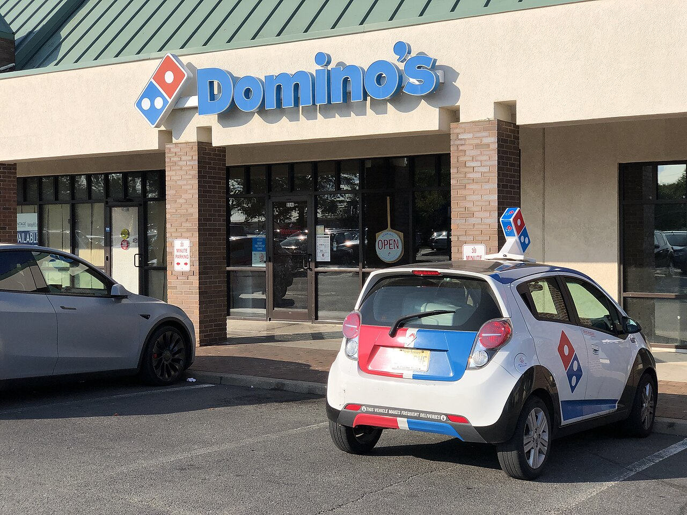

Domino's net income rose 9.2% in the third quarter as U.S. same store sales grew 0.3%


Domino's revenue grew 3.4% to $1.19 billion in the third quarter of 2026, mostly from higher sales to franchisees through its supply chain and royalties from new stores. Profit grew faster: operating income rose 8.3% to $242 million and net income rose 9.2% to $152 million. Sales at existing stores barely moved: U.S. same store sales grew 0.3%, after 5.2% in the same quarter a year earlier.
Revenue grew on supply chain sales and new stores
Revenue rose by $39 million from the third quarter of 2025. Domino's sells food and other supplies to nearly all of its U.S. franchised stores, and those supply chain revenues rose $49.2 million, or 7.1%. The 10-Q says this came from higher order volumes and higher prices for its food basket, which rose 2.2%. Royalties and fees from U.S. franchisees rose 5.4% and those from international franchisees 6.6%, which the company put down mainly to having more stores open.
Revenue from the company's own U.S. stores fell 25.8%, or $21.3 million, after it sold 77 of them in Virginia and Michigan to franchisees in the second quarter. Domino's had 22,706 stores worldwide at September 6, after net openings of 175 in the quarter: 26 in the U.S. and 149 abroad. International same store sales, excluding currency effects, grew 0.2%, after 1.7% a year earlier.
Growth has been steady through 2026, at 3.5% in the first quarter and 4.3% in the second, after 6.2% in the third quarter of 2025. For the first three quarters, revenue was $3.53 billion, up 3.7%.
Operating margin reached the highest of the twelve quarters
Operating income grew more than twice as fast as revenue, and operating margin was 20.4%, the highest of the twelve quarters covered here. The company said the gain came mainly from higher royalties, which carry no cost of sales, and more gross profit in its supply chain. Supply chain gross margin rose 0.9 percentage points, which the company put down to "procurement productivity." Margins at its own U.S. stores fell, on higher food, labor and insurance costs.
Below operating income, Domino's recorded a $2.5 million unrealized loss on its stake in DPC Dash, its master franchisee in China. The effective tax rate fell to 22.0% from 22.3%. Diluted earnings per share rose 12.7% to $4.60, faster than net income, because buybacks over the past year cut the number of shares.
Cash flow fell in the first nine months
Cash from operations in the first three quarters was $520.6 million, down from $552.3 million a year earlier. Free cash flow, after capital spending, was $459.8 million, against $495.6 million. The company said the drop came from the timing and amount of advertising payments and from changes in other operating assets and liabilities.
In the third quarter Domino's spent $73.6 million buying back 216,282 shares. After the quarter ended, its board declared a quarterly dividend of $1.99 per share. Total debt was $4.89 billion at September 6, against cash of $229 million. Of that debt, $1.33 billion was classified as due within a year. Domino's liabilities exceed its assets of $1.77 billion, leaving a shareholders' deficit of $3.96 billion.
Twelve quarters of figures
Total debt is long-term debt and finance leases, including the current portion. Quarterly cash flow figures are derived from the company's year-to-date statements. Diluted share counts aren't shown for fourth quarters.
Sources: Form 10-Q (SEC EDGAR) · Form 10-Q filing index · EDGAR company facts for Domino's · Domino's third quarter 2026 earnings release (Exhibit 99.1). More figures for Domino's are on its company page.